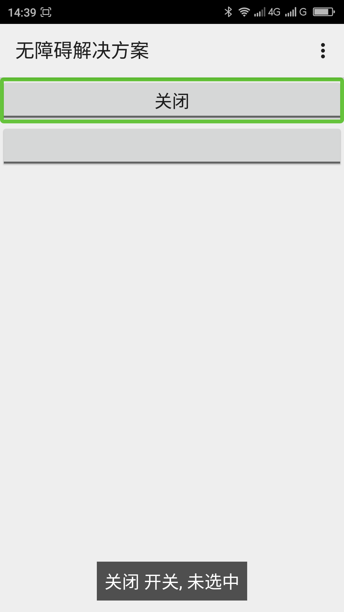
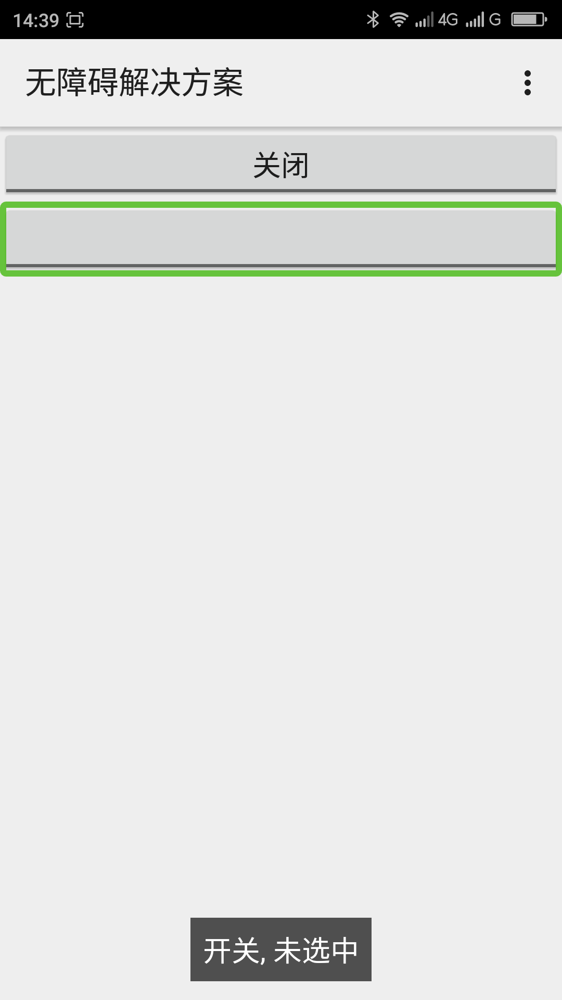
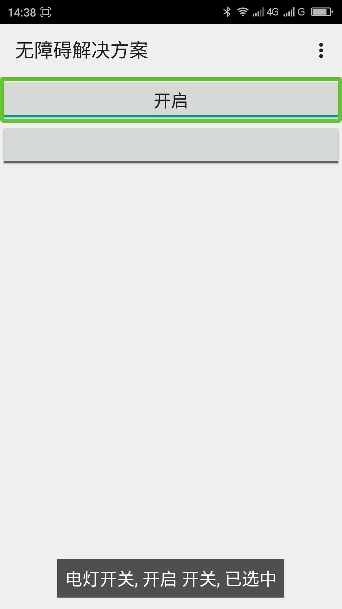
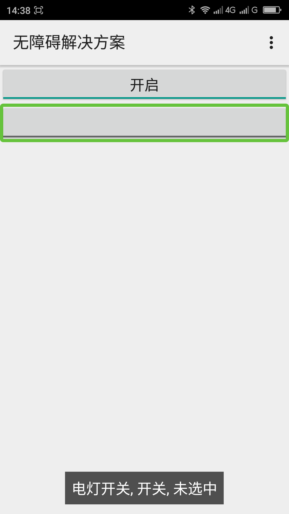

为没有提供textOn、textOff或这两个属性为空字符串的开关控件（ToggleButton）添加描述文本____20160423
【问题描述】
开关控件（ToggleButton）有状态提示文本显示，android:textOn属性是当开关开的时候显示，android:textOff是当开关关的时候显示。如果使用开关控件没有另外设置状态提示文本（textOn、textOff）默认显示的是“开”或“关”。如果android:textOn和android:textOff设置为空字符串，无论开关状态是开还是关都不会显示文本。当用户浏览到使用默认状态提示文本的开关控件的时候朗读为“开/开启 开关 已选中”（或“关/关闭 开关 未选中”），用户浏览到textOn和textOff为空字符串的开关的时候，只会朗读”开关 已选中“（或”开关 未选中“）。用户很难通过此提示清楚的了解到此开关是控制什么功能的，只能通过浏览上下文来确定。如果给开关添加了说明文本用户就能很快的知道此开关的功能。
【问题解决方案描述】
在使用开关控件的默认状态文本提示或把textOn和textOff设置为空字符串的时候给开关控件添加Android：contentDescription属性，此属性不会被显示出来，此属性可以帮助用户了解此开关控件的功能、目的。添加了此属性也不会导致不朗读开关控件的状态提示文本不朗读。
提示：使用开关控件的时候推荐自己添加状态提示文本，自己添加状态提示文本无障碍体验比添加Android:contentDescription属性好。添加状态提示文本的方式如android:textOff=”关闭消息提醒”、android:textOn=”开启消息提醒”。注意textOn和textOff会显示到控件上。
【前后效果图对比】
|  |  |
| 读器朗读：关闭 开关 未选中”或“开启 开关 未选中”； | TextOn，textOff为空时，聚焦，屏幕阅读器朗读：“开关 已选中”或“开关 未选中”； |
|  |  |
| 添加contentDescription，未设置textOn、textOff， 屏幕阅读器朗读：“电灯开关 开启 开关 已选中”、 “电灯开关 关闭 开关 未选中” | 添加contentDescription，未设置textOn、textOff为空时，双击后，屏幕阅读器朗读：“电灯开关 开关 已选中”、 “电灯开关 关闭 已选中”； |
【扩展】
Switch控件也可以使用此方法;